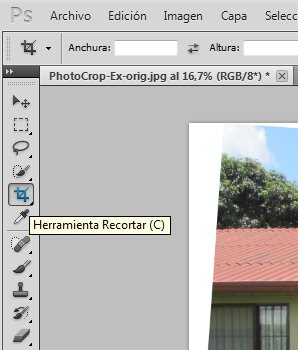
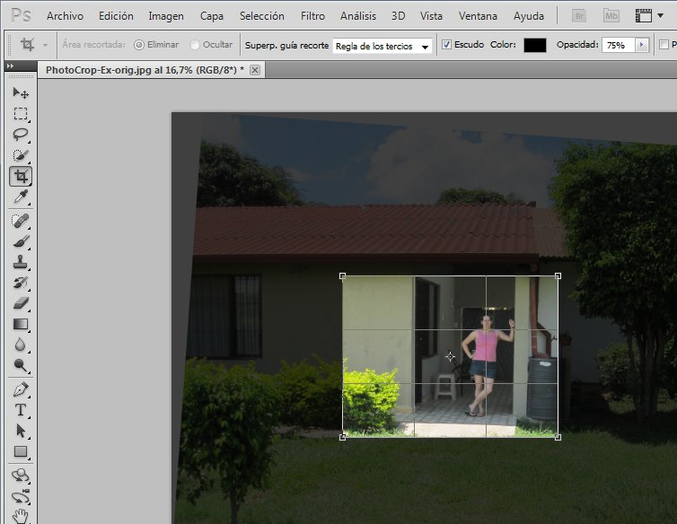
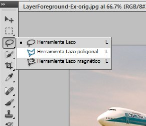
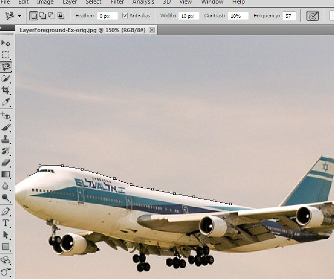
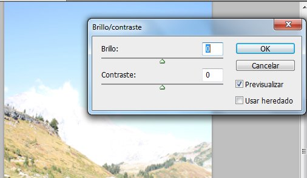

En esta sección se dará una visión general de cómo hacer las cosas que hemos aprendido en el GIMP, dentro del programa de Adobe Photoshop.
Hay muchas herramientas disponibles en
la caja de herramientas, sin embargo hay otras que están allí en
cajas que se expanden desde la caja de herramientas. Para ver estos,
haga clic derecho en cualquier herramienta que tenga un pequeño triángulo en la
esquina inferior derecha.
La rotación es un poco más complicada en
Photoshop que en el GIMP. No hay una herramienta para hacerlo,
sólo una caja en que se puede escribir un ángulo de rotación. Usted
puede llegar a ella desde Imagen -> Rotación de la imagen ->
Arbitrario...
El recorte es casi lo mismo que en el GIMP. Usted puede ajustar la proporción dimensional y la regla de los tercios en la barra en la parte superior de la pantalla. Para mover el área de recorte seleccionada, debe hacer clic y arrastrar en uno de los bordes.

Cambiar el tamaño es casi exactamente idéntico al GIMP. Imagen -> Tamaño de imagen...

Al contrario que en el GIMP, donde se utiliza la herramienta de selección y luego se aplica un filtro para eliminar ojos rojos, Photoshop tiene que todo montado en una herramienta. Sólo tiene que seleccionar la herramienta y luego usarla para seleccionar los ojos rojos, uno a la vez.

En cuanto a la selección normal, hay una herramienta de selección rectangular (llamada la herramienta Marco rectangular) que es básicamente el mismo que la del GIMP. Para las selecciones mas avanzadas, existe la herramienta Lazo/Lazo Poligonal, similar a la herramienta de selección libre en el GIMP; y la herramienta Lazo magnético, similar a la herramienta de seleccion de tijeras en el GIMP.
Pueden encontrarse en la herramienta expandible de lazo.

La herramienta Lazo Poligonal funciona
de la misma manera que la herramienta de selección libre, excepto cuando se
desea mover uno de los nodos. En Photoshop se puede usar la tecla de
eliminar (Del/Supr) para quitar el nodo anterior, pero a diferencia del
GIMP no hay forma de volver atrás y corregir lotros puntos, sin
eliminar todos los nodos en orden, uno por uno, hasta llegar al nodo deseado.

La herramienta Lazo magnético funciona
de manera similar al GIMP, pero puede ser un poco más suave para
usar. Esta herramienta calcula la ruta automáticamente al mover
el ratón, en lugar de esperar hasta que se coloque un nodo.
También se colocan automáticamente los nodos al mover el
ratón, ahorrándole de tener que hacer un clic exactamente en el límite
entre las dos áreas. Sin embargo, al igual que con la herramienta
de selección poligonal, no se puede cambiar los nodos al azar que se han
puesto, sólo se puede usar la tecla de borrar para eliminar el
último.

La forma en que funcionan las capas es
casi idéntica entre los dos programas. La única diferencia que vi
fue que cuando se pega algo en Photoshop, automáticamente se convirtió
en su propia capa permanente, en lugar de una capa flotante (que había
que convertir a una nueva capa) como en el GIMP.

Los cuadros de diálogo para brillo y contraste, niveles, y curvas trabajan de la misma forma como lo hacen en
el GIMP. Puedes encontrarlos en el menú Imagen -> Ajustes.
